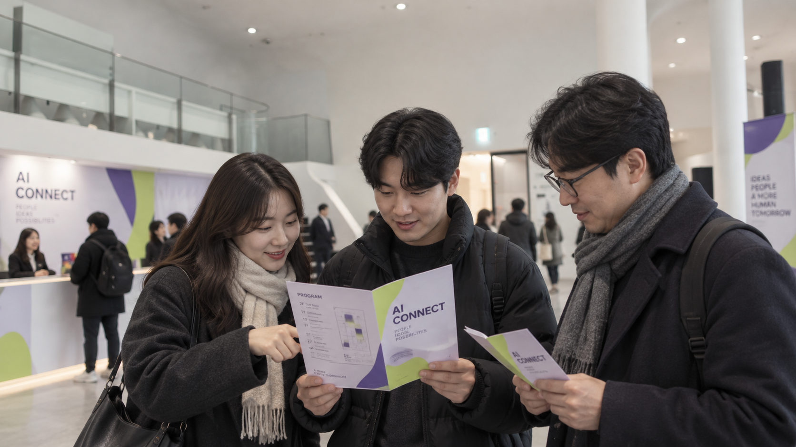
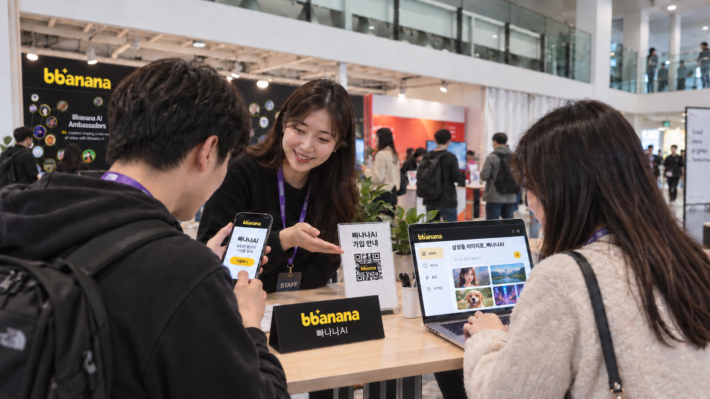
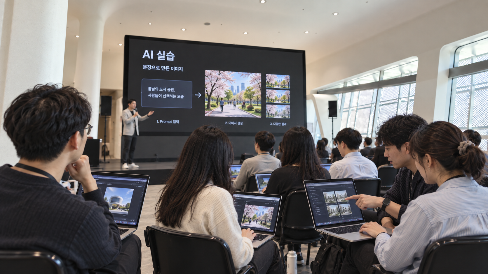
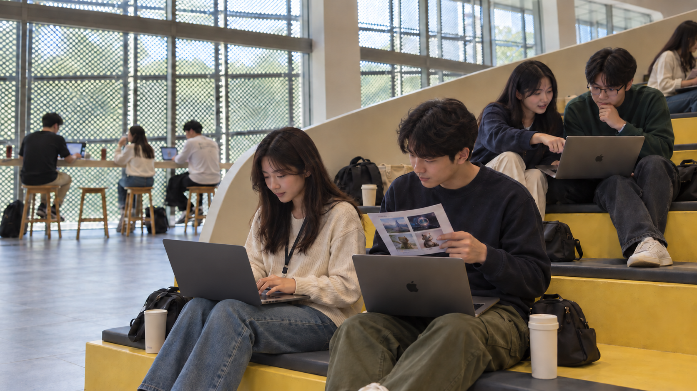
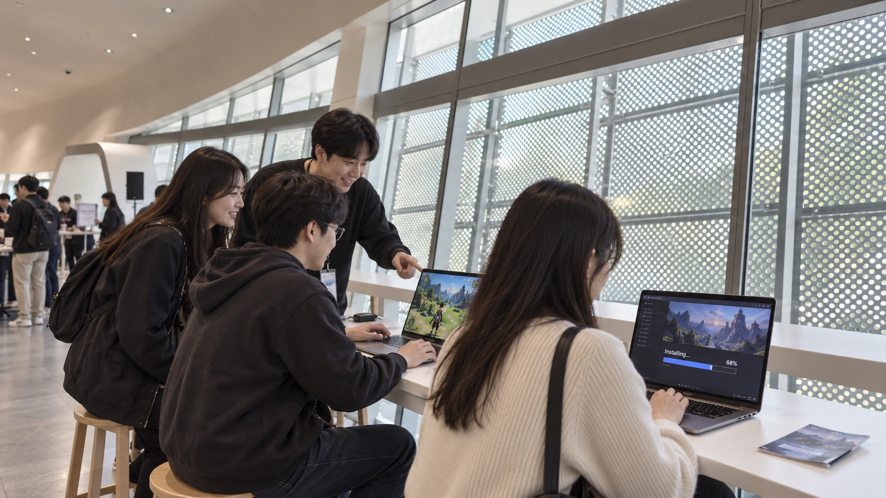
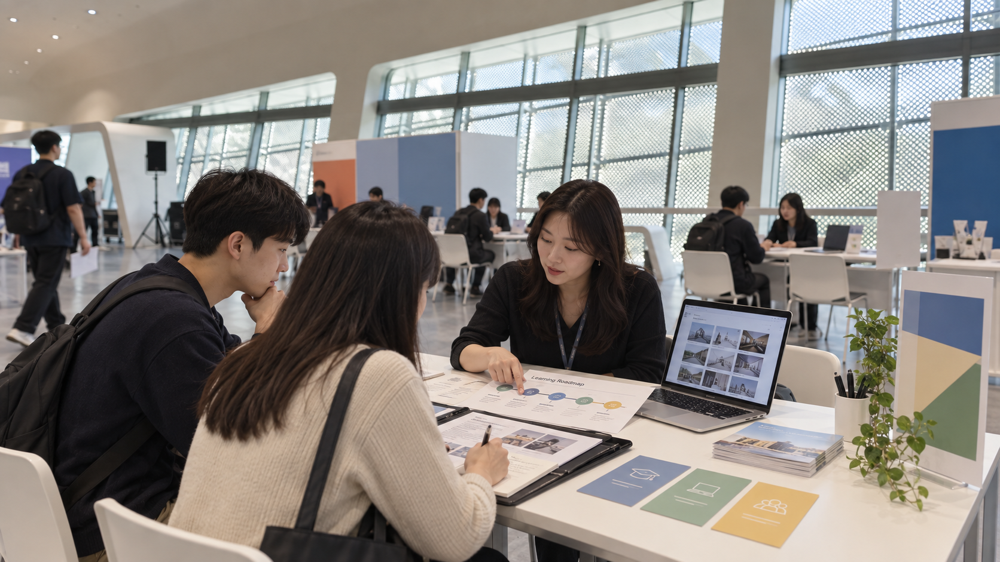

리플렛에서 시작해 AI 실습, 공부, 체험과 상담으로 이어지는 여섯 장면.행사내부 폴더의 공간 이미지를 배경 참조로 제작한 AI 생성 예상도입니다.

무엇을 보고, 어디로 갈지 함께 살펴보는 첫 장면.

스마트폰과 노트북으로 AI 도구를 시작하는 장면.

화면 속 과정을 따라 나의 첫 결과물을 만들어 보는 장면.

강의 후에도 창가와 계단에서 배우고 서로 돕는 장면.

설치부터 플레이까지, 함께 살펴보는 체험 장면.

포트폴리오와 학습 로드맵을 놓고 다음 단계를 상담하는 장면.